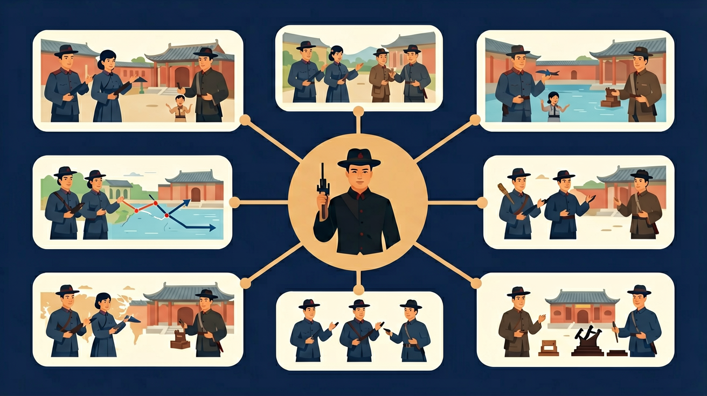

通过了解辛亥革命，认识推翻帝制、建立民国的意义与局限性。

🎯 能说出辛亥革命爆发的直接原因（武昌起义）和根本原因（民族危机）
🎯 能判断三民主义中'民权主义'的核心内容（推翻帝制，建立共和）
🎯 能分析辛亥革命的历史局限性（未彻底改变社会性质）
❓ 为什么孙中山要剪掉辫子？这跟革命有什么关系？
❓ 课本说辛亥革命'成功'了，可为什么后来还有军阀混战？
❓ 如果我是当时的普通老百姓，会支持革命军吗？为什么？
学完这一课，这些问题你都能自信地回答。
辛亥革命爆发的标志性事件是？
三民主义不包括以下哪项？
辛亥革命是初中历史的重要内容。通过了解辛亥革命，认识推翻帝制、建立民国的意义与局限性。
能够了解中国近代历史的基本线索和重要的事件、人物、现象，知道重大史事发生的时间和地点、原因和结果。
点击时代/图层按钮切换地图；悬停边界，点击城市标记查看说明。
把卡片拖到核心概念 / 方法技能 / 应用情境 / 常见误区。
拖完 4 项后自动判分。
迁移任务：找一道与「辛亥革命」相关的练习题或生活情境，用本课方法完整解答一遍。
孙中山等革命派提出三民主义，发动武装起义。1911年武昌起义后各省响应，清朝统治瓦解，中华民国建立，结束两千多年帝制，民主共和观念传播，但胜利果实被袁世凯等窃取，反帝反封建任务未完成。
成果与局限要一起写：政治上结束帝制，社会思想上影响深远，但未改变半殖民地半封建性质。
常见误区：常见误区是认为辛亥革命彻底完成了反帝反封建任务。
辛亥革命的最大历史功绩是？
实例一：现代城市道路命名中的革命记忆。武汉"首义路"、广州"起义路"等全国38个城市存在的这类路名，直接源自对辛亥革命地理坐标的纪念。2011年辛亥革命百年时，百度地图推出"数字纪念馆"功能，用户可查看全国128处革命遗址的AR复原。
实例二：影视制作中的考据应用。电视剧《走向共和》服装组查阅1911-1912年海关报告，还原当时革命军服混搭现象：汉口起义部队着新军制服但左臂缠白巾，南京临时政府官员有的穿西装有的着长衫。这种细节考证依赖对革命时期社会转型的深入研究。
实例三：区块链技术在文物确权中的运用。2023年台北故宫将孙中山《建国大纲》手稿等12件辛亥革命文物上链，利用NFT技术解决跨境展览中的真伪争议。每件文物都附带1912年临时政府公报的数字化档案作为权属证明。
问题一：为什么武昌起义后革命能迅速席卷全国，而之前十年间多次起义均告失败？分析线索：注意1911年与之前不同的关键变量——保路运动导致湖北新军调防造成的防御真空；立宪派士绅态度的转变（可对比1908年各省咨议局立场）；观察革命军占领武汉三镇后颁布的《鄂州约法》对地方实力派的政策吸引力。
问题二：如何评价"辛亥革命是资产阶级革命"这个传统论断？思考路径：统计南京临时政府9部总长中实业家占比（仅张謇1人）；分析《临时约法》第5条"人民有保有财产及营业之自由"的实际落实情况；对比同期江浙资本家对革命的实际资助金额（约占军费总额15%）与传统地主士绅的贡献比例。
先看19世纪末的中国如何走到革命前夜：甲午战败后，民族危机催生出1895年广州起义等早期尝试，但孙中山等海外革命者与国内实际脱节。接着关键转折出现在1905年，同盟会成立提出"驱除鞑虏"口号，同时清廷"预备立宪"暴露顽固本质——1908年《钦定宪法大纲》仍规定皇帝有权"颁行法律及发交议案"，这种假改革激化矛盾。当1911年5月"皇族内阁"13人中满族占9人时，连立宪派都转向革命。
革命爆发过程充满戏剧性：10月9日孙武在汉口俄租界配制炸弹意外爆炸，导致起义计划泄露，新军士兵在群龙无首状态下于10月10日晚自发举事。值得注意的是革命后的权力重组：湖北军政府推举旧军官黎元洪为都督，反映出革命派组织力的不足。最后聚焦民国建立的制度设计：1912年3月颁布的《临时约法》将总统制改为责任内阁制，这种因人（防范袁世凯）设法的制度安排，为后续府院之争埋下伏笔。
理解革命影响需要多维数据支撑：经济上，1912年新注册工厂数激增至1313家（1903-1908年均不足百家）；教育上，1915年全国新式学堂学生数较1909年增长3倍；但政治上，1913年宋教仁遇刺暴露民主转型的脆弱性。这种进步与局限并存的复杂面相，正是分析辛亥革命历史地位的关键。
错误一：认为辛亥革命完全由孙中山领导。学生常忽略其他革命团体如共进会、文学社的作用。认知根源在于教材对孙中山"国父"形象的强化叙述。实际上1911年武昌起义爆发时孙中山正在美国筹款，首义是由湖北新军中蒋翊武、孙武等组织的。正确理解是：辛亥革命是多方力量共同推动，仅1911年全国就发生20余次武装起义，孙中山领导的同盟会只是其中一支。
错误二：将"推翻帝制"等同于立即实现民主。学生容易将1912年民国建立视为民主制度的完成态。认知根源在于线性进步史观的影响。事实上《临时约法》颁布后，中国仍经历袁世凯称帝（1915）、张勋复辟（1917）等倒退。正确理解是：辛亥革命只是民主进程的开端，直到1928年东北易帜才真正实现形式上的全国统一。
错误三：高估革命后社会变革程度。学生常误以为剪辫、放足等移风易俗政策立即普及。认知根源在于将政府法令等同于社会现实。据1914年警务报告，北京城内仍有1/3男性留辫。正确理解是：社会变革具有滞后性，直到20世纪30年代，福建等地农村仍存在"辫子税"这种变通政策。
复制提示词到 AI 学伴，生成「辛亥革命」的时间轴或事件提纲；也可以上传你手绘的示意图，请 AI 学伴点评。
复制后可粘贴到 AI 学伴继续对话。
关于辛亥革命成果的正确理解是？
对比'驱除鞑虏'与'五族共和'口号
关于辛亥革命的学习，哪种做法最科学？
选一个并查看反馈。
先独立作答，再点选项查看对错与错因。
武昌起义后，茶馆里传阅的《民立报》最可能宣传什么内容？
下列哪项最能体现武昌起义的直接影响？
当时民众剪辫子的行为象征什么？
标志辛亥革命爆发的事件是____起义
答案：武昌
1911年10月10日
辛亥革命推翻了中国两千多年的____制度
答案：封建君主专制
或答'帝制'
✅ 强调革命团体（同盟会）和各地响应的集体作用
💡 教材人物插图突出孙中山
✅ 用'半殖半封'社会性质未变说明革命不彻底
💡 对'成功'的绝对化理解
口诀：武昌枪响帝制倒，三民主义指方向，虽未彻底意义大
类比：像推倒第一块多米诺骨牌：虽然后续牌没全倒，但启动连锁反应
（中考风）辛亥革命最深远的历史影响是？
若1911年报纸头条出现'光复'一词，最可能指？
（迁移题）当代'中山路'遍布全国，反映了辛亥革命的？
点击节点跳转到对应章节；可切换布局。